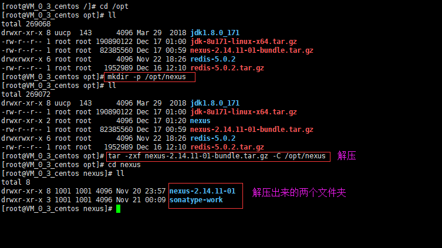
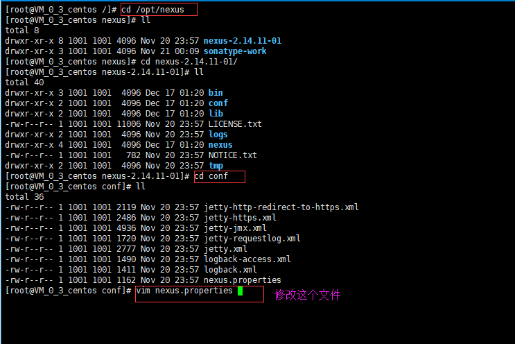
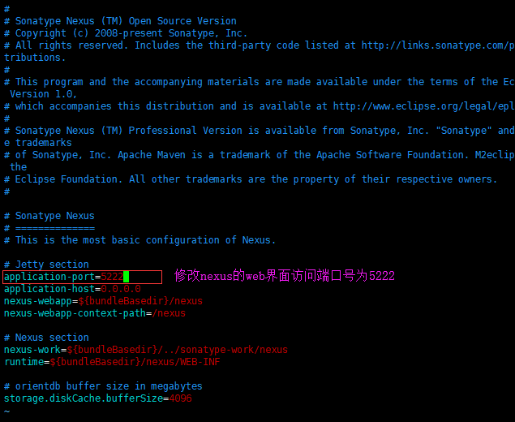
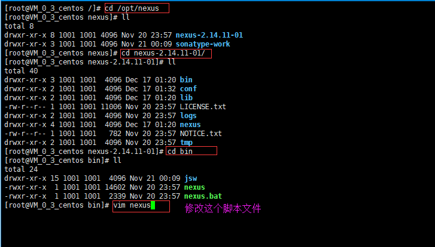
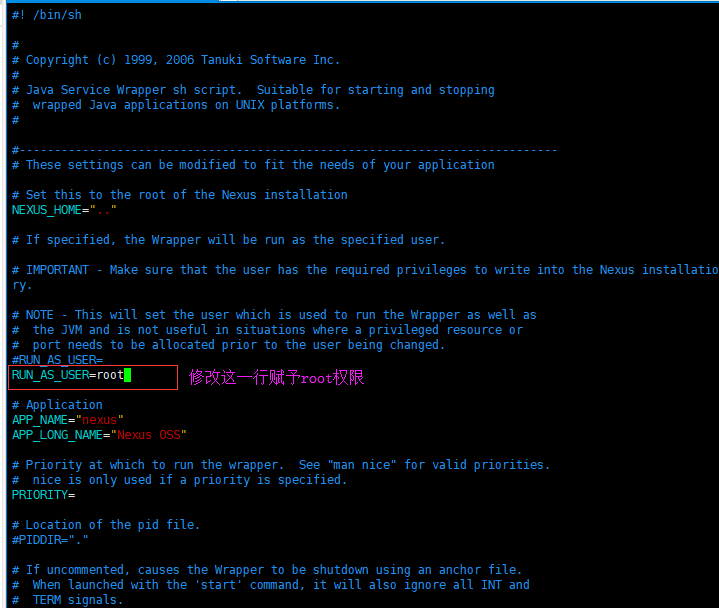
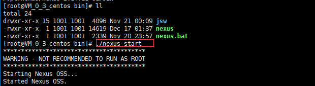
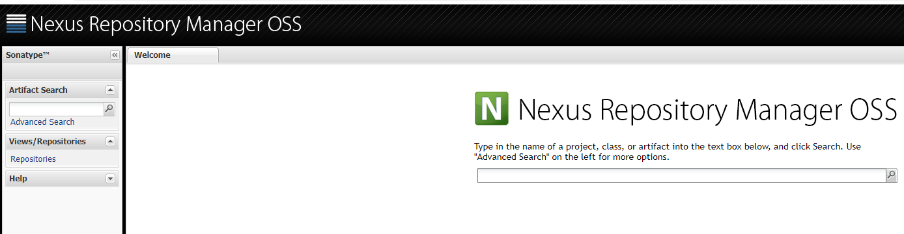

前置准备：安装JDK
点击链接：安装JDK教程
第一步：上传nexus压缩包并解压缩
最好创建一个文件夹（这里用/opt/nexus）用来存放解压后的nexus压缩包，主要是因为nexus解压出来后有两个文件夹

第二步：配置nexus
修改nexus的启动端口号（nexus的web界面是由jetty提供的，可以修改端口号）


修改 Nexus 运行用户（由于Nexus 私服在启动后，私服应用需要访问 Linux 的文件系统，所以需要有足够的权限），此信息在nexus-2.11.2-03/bin/nexus脚本文件中修改


第三步：放通防火墙端口
点击链接：centos6的防火墙配置
第四步：启动nexus
nexus目录下的bin目录下的脚本启动

用http://ip:port/nexus网址来访问，如果出现如下界面则说明成功了

第五步：下载中央仓库的jar包
第六步：让maven工程使用私服